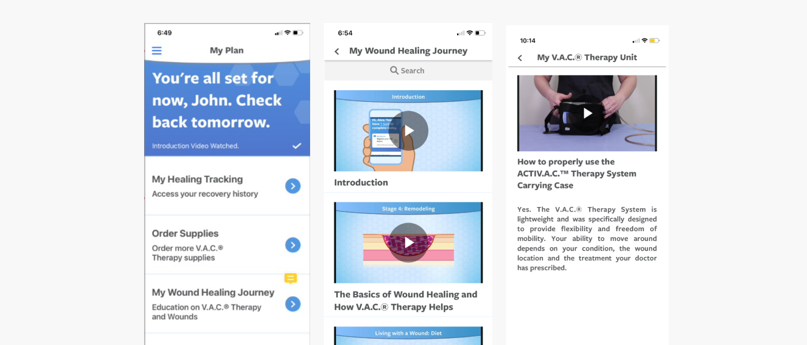
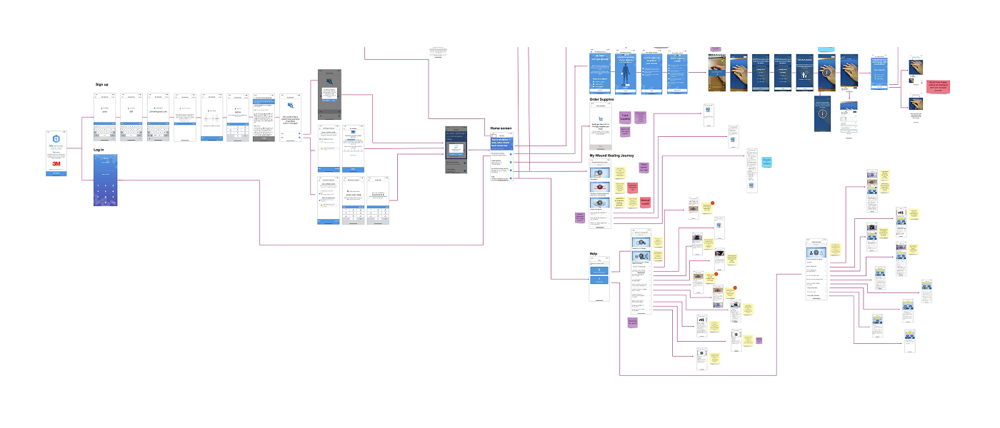
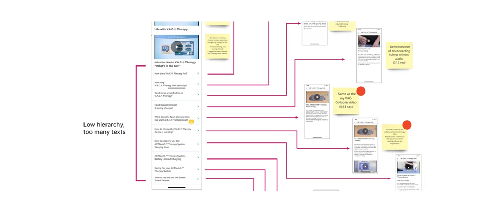
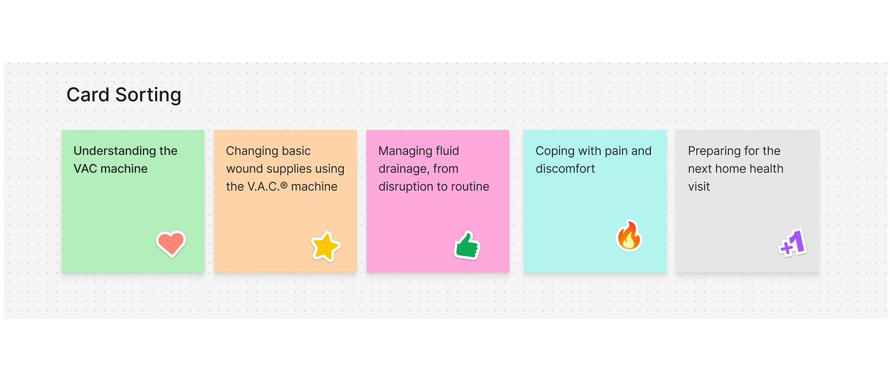
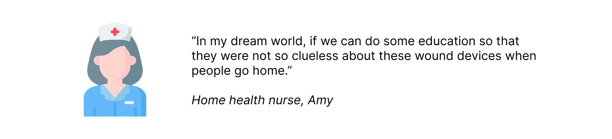
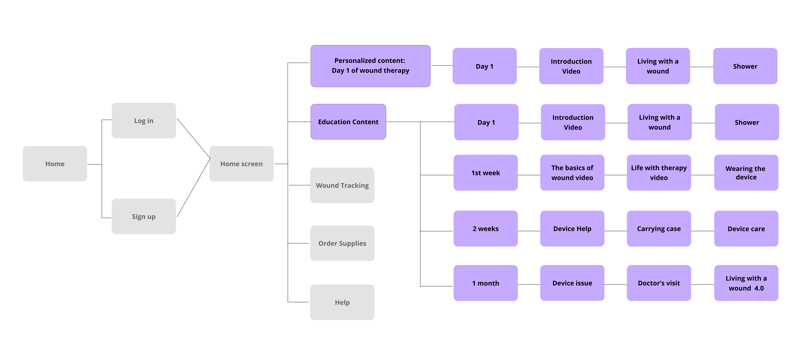
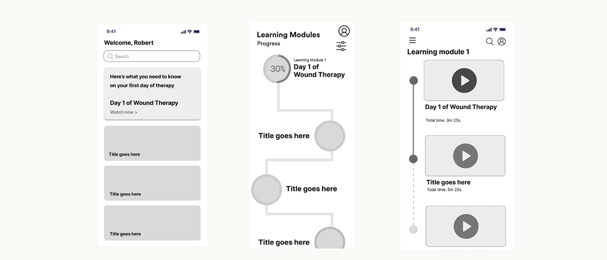
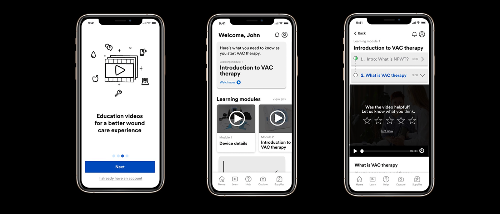
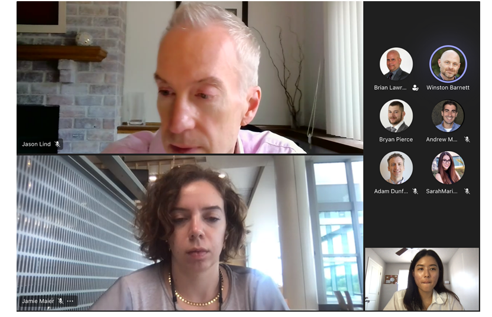
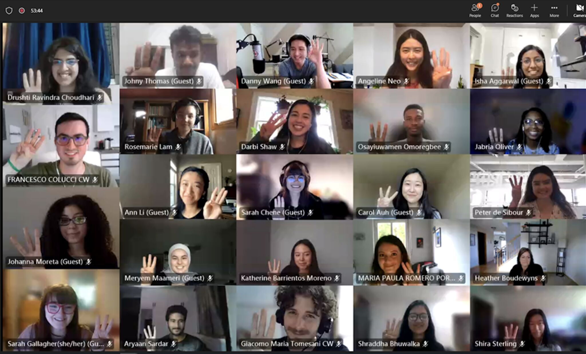

Wound care educational mobile app
A redesign of the MyWoundHealing app — a companion app to the world's most-used wound therapy machine. The goal: help patients undergoing wound therapy actually engage with the educational content built to support their recovery.
THE MISSION
Patients lose engagement with the app while going through their wound care journey.
UX research identified a critical gap: patients undergoing wound therapy weren't engaging with the MyWoundHealing app's educational content due to poor usability. Only 2% of eligible patients downloaded the app — a clear signal that the existing design was failing the people it was built for.

Key Insight 1 — Getting to an answer took too many steps
User flow analysis showed that finding information on a single topic took more than two steps on average. For patients managing pain, fatigue, and anxiety about their wound, every extra tap was a reason to give up.

Key Insight 2 — Relevant content was buried in irrelevant content
The app's educational library was organized around clinical categories, not patient needs. A patient searching for one specific concern — "Is this drainage normal?" — had no way to isolate it from unrelated content. Finding an answer meant digging through a wall of information that wasn't sequenced to where they actually were in their recovery.

TLDR: Together, both insights pointed to the same root problem: the app had content, but no sense of a patient's timeline. It treated a patient on Day 1 the same as Day 30 — and asked both to dig equally hard to find what they needed.THE RESEARCH
Validating the timeline problem with patients and providers
To confirm this, a 30 in-depth interviews with patients was conducted going through the wound care journey. 84% expressed a strong desire to better understand how to manage their own wound — but the app's flat, category-based structure wasn't built to answer that need at the right moment.
A card sort with these patients confirmed what mattered most to them, stage by stage:

Interviews with nurses and healthcare providers echoed the same gap from the clinical side: patients were being sent home with too little preparation, then left to piece things together on their own.

TLDR: The research made the fix clear: patients didn't need less content. They needed the right content, at the right step, with fewer clicks to reach it.Market Research
Market research gave me valuable perspectives on user-friendly interfaces, engaging content from visually appealing UI designs, and the user experience of the overall navigation. Informed by competitive research, I built many, many, many variations of the education content before settling on a final design.
Three principles guided the design:
- Personalized content — surfaced by therapy stage, not clinical category
- Gamification — to increase engagement
- Bite-sized information — breakdown content into digestible information
THE SOLUTION
Designing the wound care app around the patient's timeline
I restructured the app's information architecture around the patient's actual journey: Day 1 through end of treatment. This directly addressed both root causes from the Problem phase: content became sequenced by stage, and getting to it required far fewer steps.


Result
The concept was presented to internal and external stakeholders and is now live on Google Play and the Apple App Store. The project advanced to MVP.

REFLECTION
Key Learnings
1. Understanding service design: Taking a step back to learn about the complexity of the healthcare ecosystem and the full end-to-end patient journey.
2. I felt grateful I get to work with an amazing, talented team in the Healthcare Division. Below is a screenshot of a meeting with the healthcare design team and external stakeholders. I learned a lot from everyone that I've worked with.

The 3M Healthcare Division team

Orientation day with other 3M interns